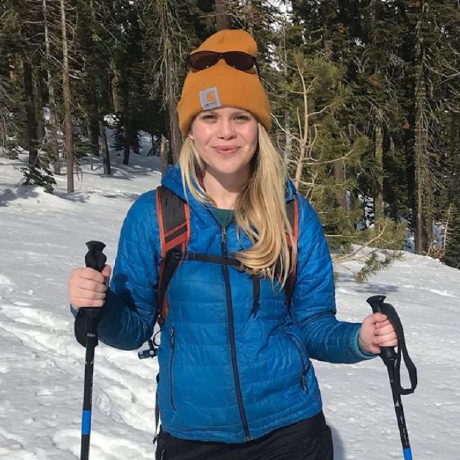

Elizabeth Hall
I am a graduate student in Psychology at UC Davis. I work with Joy Geng in the Integrated Attention Lab studying visual perception and memory in the human brain. I previously worked with Chris Baker in the Laboratory of Brain and Cognition at the NIH and with Doug Davidson at the Basque Center for Cognition, Brain, and Language.
ehhall @ ucdavis dot edu google scholar twitter github
news
9/2021: Two new preprints added! Also completed the Deep Learning section of Neuromatch!
9/2020: Work with my old mentors Chris Baker and Wilma Bainbridge looking at encoding and recall of object / scenes in 7T fMRI is now out in Cerebral Cortex!
7/2020: I participated in Neuromatch Academy, and got this fancy certificate!
6/2020: Updated this website!
5/2020: I won Most Creative Methodology and tied for first place for Best Grad Talk at the UC Davis Spring Psychology Conference.
4/2020: I was awarded the National Defense Science and Engineering Graduate Fellowship to pursue work on visual attention in virtual reality.
research
 Highly similar and competing visual scenes lead to diminished object but not spatial detail in memory drawings
Highly similar and competing visual scenes lead to diminished object but not spatial detail in memory drawings
Elizabeth H. Hall, Wilma A. Bainbridge Chris I. Baker
Preprint.
We investigated the detail and errors participants can have in memory when having to recall multiple, similar scenes. We found that memory drawings of "competing" scenes have diminished object detail, but are surpisingly still fairly spatially accurate.
 Objects are Prioritized for Attention Based Upon Meaning During Active Scene Viewing
Objects are Prioritized for Attention Based Upon Meaning During Active Scene Viewing
Candace Peacock, Elizabeth H. Hall, John M. Henderson
Preprint.
We looked at whether fixations were more likely to land on high-meaning objects in scenes. We found that fixations are more likely to be directed to high meaning objects than low meaning objects regardless of object salience.
 Distinct representational structure and localization for visual encoding and recall during visual imagery
Distinct representational structure and localization for visual encoding and recall during visual imagery
Wilma A. Bainbridge, Elizabeth H. Hall, Chris I. Baker
Cerebral Cortex, 08 December 2020
We find representations of memory content during recall show key differences from encoding in granularity of detail & spatial distribution. We found that peak encoding & recall similarity is anterior to encoding peaks.
 Eye Movements in Real-World Scene Photographs: General Characteristics and Effects of Viewing Task
Eye Movements in Real-World Scene Photographs: General Characteristics and Effects of Viewing Task
Deborah A. Cronin, Elizabeth H. Hall, Jessica E. Goold, Taylor R. Hayes and John M. Henderson
Frontiers in Psychology, 14 January 2020.
We examined effects of viewing task on when and where the eyes move in real-world scenes during memorization and an aesthetic judgment tasks. Temporal- and distribution-level analyses reveal significant task-driven differences in eye movement behavior.
 Drawings of real-world scenes during free recall reveal detailed object and spatial information in memory
Drawings of real-world scenes during free recall reveal detailed object and spatial information in memory
Wilma A. Bainbridge, Elizabeth H. Hall, Chris I. Baker
Nature Communications, 02 January 2019.
Participants studied 30 scenes and drew as many images in as much detail as possible from memory. The resulting memory-based drawings were scored by thousands of online observers, revealing numerous objects, few memory intrusions, and precise spatial information.